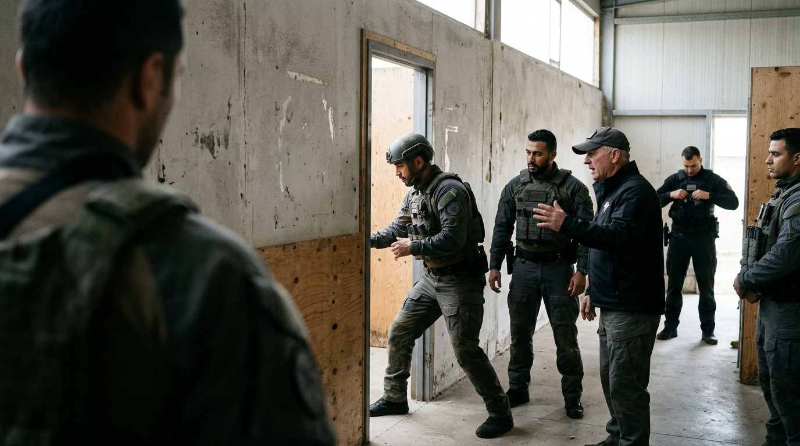
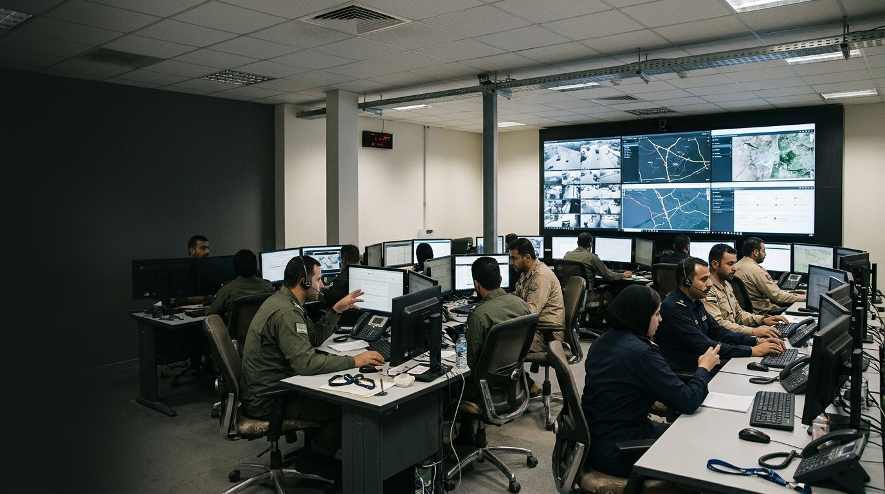

SOC
Serious & organised crime
Disrupt illicit economies, trafficking, organised immigration crime and the networks that finance instability.
Security and resilience
TAG designs and delivers bespoke programmes that strengthen security and resilience — building, and helping operate, the capabilities, institutions and systems that governments, institutions and critical-infrastructure operators depend on to meet complex threats.
Modern security threats are systemic — we connect strategy, institutions, people, technology and operational delivery to meet these challenges.
A security and resilience business of TAG Group — working where the systems are hardest.
What we do
Real capability is more than a single intervention. We integrate people, policy, process, information systems and interoperability, so the components work as one and capability performs when needed.
01People
The right people, expertly trained.

02Policy
Strategy and policy set direction; process delivers on the ground.
03Systems
Secure, efficient and trusted.

04Integration
Systems and people working together as one.
Across the whole threat landscape
Threats are systemic and cross every domain — for governments and the operators of critical infrastructure alike. We build the whole of capability across the full landscape, and integrate it into a single, coherent operational response.
Disrupt illicit economies, trafficking, organised immigration crime and the networks that finance instability.
Investigative, pursuit and prevention capability, built to national standards and oversight.
Assessment, fusion and tradecraft that turn information into lawful, actionable advantage.
New capability development, CUAS, SAT, doctrine, officer and soldier development, Special Forces training.
Secure-by-design resilience across networks, OT and the information environment.
Detect and counter foreign information manipulation and interference against open societies.
Securing sites, assets and essential services for operators and owners — from counter-drone (C-UAS) to resilience planning across energy, ports, utilities and industry.
Secure the strategic supply chains and critical minerals that economies and defence depend on — mapping dependencies, reducing chokepoints and countering disruption and coercion.
How we work
01 / 03
We work in the language of the threat — CNI, cyber, CT, intelligence and organised crime — and deliver against it.
02 / 03
We build with local ownership, so the capability stays and holds after we leave.
03 / 03
We stand up capability, transfer it, and sustain it until it holds under real pressure.
Track record
Our credibility is in our track record — where we have worked, who trusts us to deliver, and the standards we hold ourselves to.
Case studies
Illustrative engagements — to be replaced with cleared case studies and hard outcomes
 Serious & organised crime
Serious & organised crime
 Cyber
Cyber
 Security & defence
Security & defence
Part of TAG Group
Parent group
The umbrella group, spanning security, resilience, development and the environment in complex, fragile and frontier settings.
Security & resilience
A security and resilience business building and delivering capability in the world's most complex environments — for governments, institutions and critical-infrastructure operators.
Climate resilience & nature
A climate resilience and nature business delivering ecosystem transformation and sustainable development in complex settings.
Visit C4Our reach
Multidisciplinary, security-cleared and internationally experienced — deployed at scale across some of the world's most demanding environments.
Work with us
Talk to our team about a security or resilience challenge, or about partnering with TAG to deliver.